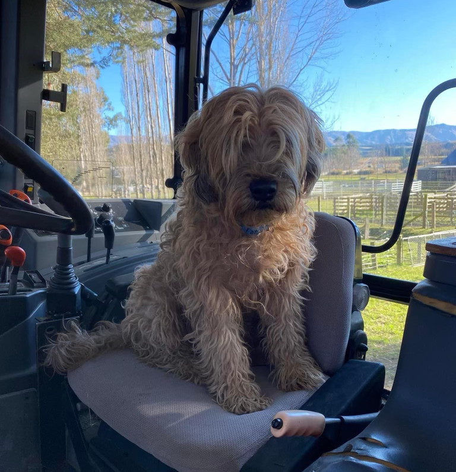
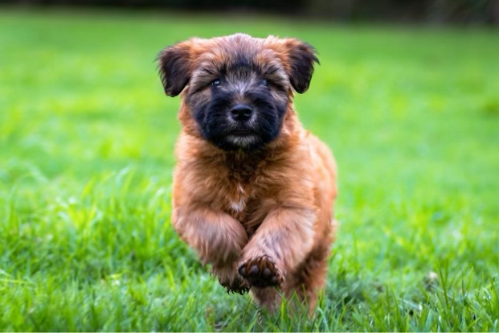
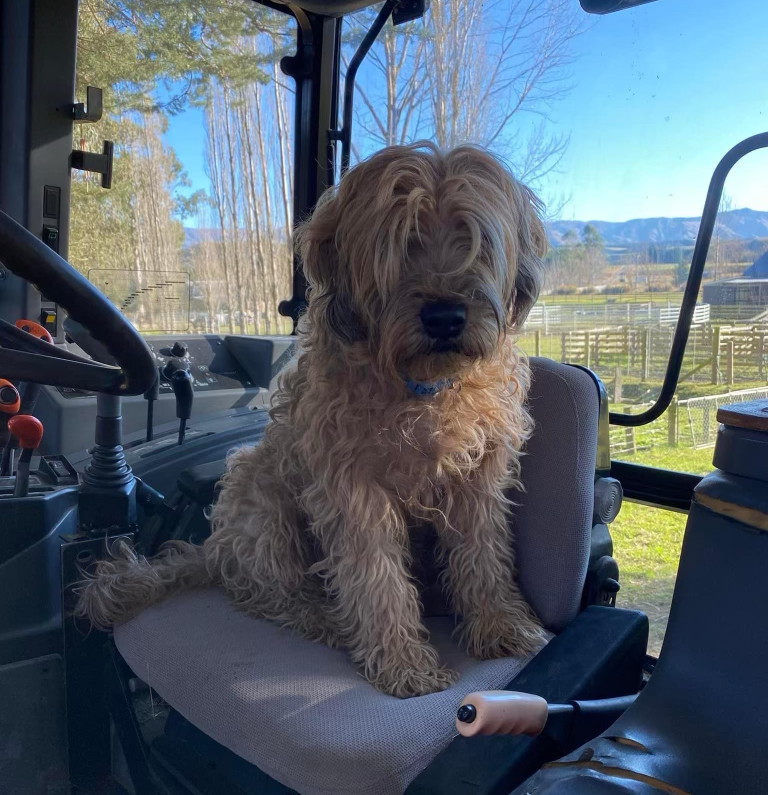
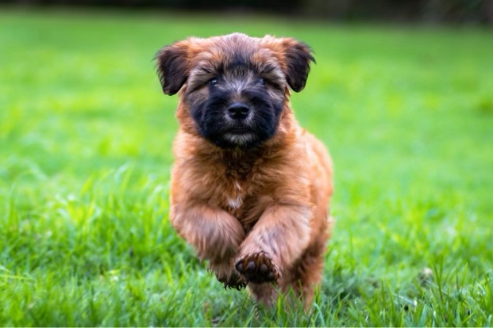

About the Breed
“A Wheaten.” “From the land of mysterious druids, wailing banshees & impish leprechauns comes this
bundle of
joy”.
He has a typical happy-go-lucky Irish outlook. He loves children and thrives on human
companionship.
Extrovert and exuberant, he is willing to go anywhere at any time. He requires a
little
patience to train, but is eager to please."
His coat, when natural, needs very little care: described as the colour of ripening wheat, it is soft and
silky and suits his jaunty approach to life.
A sturdy dog who is hardy and unexaggerated in any
way, he
makes an excellent house pet.
Wheatens are a medium sized compact upstanding terrier well covered with a soft, wheaten coloured
natural
coat that falls in loose curls or waves.
An active short coupled dog, strong and well built, well
balanced
in structure and movement, not exaggerated in any way.
Standing four square with head and tail up,
giving
the appearance of a happy dog full of character.
The Wheaten is of such an intelligence that he often knows his owners moods and wishes before they
do.
They are a constant companion and will willingly follow you to the end and back. They are trusting and
full
of compassion and very devoted.
Wheatens suit all manner of lifestyles from a small flat to
wide-open
spaces. They are great with children and other pets Very inquisitive and fun loving.
 


